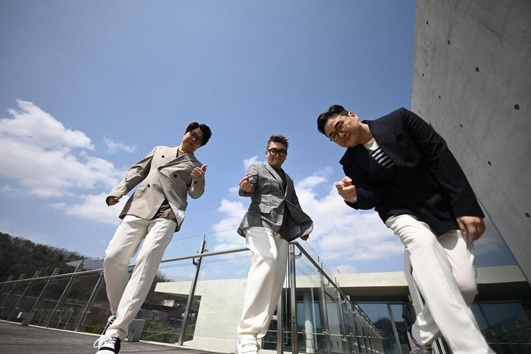

접수 · 개회예배
Opening이우제 교수의 강단으로 제46차 컨퍼런스가 열립니다.
이우제 교수
VOL. 46청소년 바이블컨퍼런스
갈라디아서 2:20
More Like Jesus
말씀으로 발견하는 정체성, 삶으로 이어지는 믿음.
2027년 겨울, 가평 승동기도원에서 청소년과 지도자가 같은 자리에 서는 2박 3일.
Subject · Greeting
무엇을 가졌는지로 자신을 말하는 세상에서, 이번 주제는 다른 질문을 던집니다.
“이제는 내가 사는 것이 아니요 오직 내 안에 그리스도께서 사시는 것이라”
GALATIANS 2:20대표 인사말
사랑하는 청소년과 지도자 여러분, 2027년 겨울 제46차 바이블컨퍼런스에서 만나기를 기다립니다. 무엇을 가졌는지로 자신을 말하는 세상에서, 이번 주제는 다른 질문을 던집니다. “내 안에 누가 사시는가.”
바울은 그 답을 이미 말했습니다. 아이들이 이 문장을 삶으로 만나기를 소망합니다. 1997년부터 겨울을 지켜 온 자리가 이번 겨울로 46번째입니다.

제46차 바이블컨퍼런스는 “THE CHRISTIAN, More Like Jesus”로 열립니다. 첫째 날 밤 A-MEN의 음악예배로 마음을 열고, 개회예배와 오전예배, 비전특강으로 말씀을 함께 읽습니다.
팀 미션과 복음 레크리에이션, 마지막 밤 사명자 뱃지 수여와 애찬식, 그리고 파송예배까지 — 2박 3일 동안 아이들은 함께 웃고, 함께 기도하고, 함께 예수님을 닮아갑니다.
Program
접수와 개회예배에서 파송예배까지 — 공식 일정표 그대로 여덟 자리입니다.
이우제 교수의 강단으로 제46차 컨퍼런스가 열립니다.
이우제 교수
3인조 보컬 A-MEN과 함께하는 음악예배로 마음의 문을 엽니다.
A-MEN · 강중현 · 정기세 · 김성호
아침을 여는 말씀, 하루를 하나님 앞에 세우는 시간입니다.
양재영 목사
세 시간 동안 신앙의 회복을 함께 살피고 세웁니다.
황우성 목사 · 지도자 세미나 병행
다음 세대를 세우는 지도자의 비전을 나눕니다.
서태근 목사 · 지도자 세미나 병행
성경을 함께 펼치고, 문제로 겨루며 말씀을 붙듭니다.
전 참가자
조별 미션과 레크리에이션으로 공동체와 동역을 배웁니다.
고종원 선교사
뱃지를 달고 떡을 떼며, 세상으로 파송받습니다.
정현진 목사
지도자 세미나는 컨퍼런스 기간 중 교사·교역자를 위해 같은 시간에 따로 진행됩니다.
Speakers
전문강사 7인과 특별찬양 A-MEN. 다음 세대에게 보다 넓은 기독교적 가치관을 심어 주는 강사진입니다.
대표



SpecialSchedule
1월 14일(목) 13:00 접수로 시작해 16일(토) 파송예배로 마칩니다.
옆으로 넘겨 세 날을 함께 볼 수 있습니다.
| 시간 | 1.14 목 | 1.15 금 | 1.16 토 |
|---|---|---|---|
| 06:00 | 13:00 접수 시작 |
일어납시다~ | 일어납시다~ |
| 07:00 | 오전예배양재영 목사 | ||
| 09:00 | 신앙회복코칭황우성 목사지도자 세미나 | 바이블 챌린지[Bible Challenge] | |
| 11:00 | 파송예배정현진 목사 | ||
| 11:30 | 포토타임 | ||
| 13:00 | 접수 | 비전특강서태근 목사지도자 세미나 | More Like Jesus |
| 14:00 | 개회예배이우제 교수 | ||
| 14:30 | 바이블열전 | ||
| 15:00 | 오리엔테이션지도자 세미나 | ||
| 16:00 | 복음 레크레이션고종원 선교사지도자 세미나 | ||
| 17:00 | 팀 미션 #1지도자 세미나 | ||
| 19:00 | 에이멘_찬양지도자 세미나 | 팀 미션 #2지도자 세미나 | |
| 20:00 | WORSHIP | ||
| 21:00 | Vision Prayer | 사명자 뱃지 수여 및 애찬식 |
|
| 22:00 | 잘 자요~ | Celebration Praise교회별 기도모임잘 자요~ | |
교사·교역자는 컨퍼런스 기간 중 별도 자리에서 훈련받습니다. 표의 지도자 세미나 표시가 있는 시간입니다.
프로그램과 일정은 진행 상황에 따라 변동될 수 있습니다.
Registration
신청서를 내려받아 명단을 적어 메일로 보내 주세요. 담당자 확인 후 입금 안내를 드립니다.
BANK ACCOUNT
국민은행866401-04-106794
예금주 GV청소년선교회 · 신청자(교회) 이름으로 입금
한글(HWPX) 파일입니다. 한글 2014 이상이나 한글 뷰어에서 여실 수 있습니다.
pjypjy323@hanmail.net
메일 제목 — 교회는 [바이블컨퍼런스 참가신청] ○○교회
스탭은 [바이블컨퍼런스 스탭신청] 이름
담당 전자옥 전도사 010-6491-3683
사무실 02-429-1318
정원이 차면 조기에 마감될 수 있습니다. 입금만 하고 신청서를 보내지 않으면 등록이 완료되지 않습니다. 브라우저 보안상 첨부 파일은 자동으로 붙지 않으니, 작성한 신청서를 메일에 직접 첨부해 주세요.
Location
가평역에서 차로 15분, 서울에서 1시간 30분. 지도 앱에서 ‘승동기도원’을 검색하셔도 됩니다.
ADDRESS
경기도 가평군 가평읍
경반안로 261
기도원 031-581-6007 · 무료 자체 주차장
화도IC → 신경춘로 → 가평오거리 → 가평군청 앞 → 석봉로191번길
경춘선 가평역 하차(ITX-청춘 이용) → 약 5km, 차 15분
동서울·상봉터미널 → 가평시외버스터미널 → 약 5km, 차 15분

컨퍼런스 안내 페이지일정·강사·신청을 한눈에. QR을 찍거나
aichurchsystem.github.io/Church/gv-youth 로 오세요.